Easy Func
(kalkulator Penyelesaian Fungsi Komposisi dan Fungsi Invers)
Panduan Pengguna
help
Fungsi Komposisi
Fungsi Invers
f(x) =
g(x) =
(f o g)
(
x
) =
f(x) =
f
-1
(x) =
x
□
□
□
□
7
8
9
×
4
5
6
+
1
2
3
-
0
.
(□)
=
Penyelesaian :
Panduan Pengguna
kalkulator fungsi komposisi
Masukan Nilai fungsi f(x)
Masukan Nilai fungsi g(x)
Klik tombol
jika ingin mencari (g o f)(x) atau sebaliknya
Klik tombol sama dengan
=
untuk mendapatkan hasil komposisi yang diginginka
kalkulator fungsi invers
Masukkan nilai fungsi f(x)
Klik tombol sama dengan
=
Jenis - jenis tombol pada kalkulator ini
Tombol Numerik (tombol untuk memasukkan angka)
1
2
3
4
5
6
7
8
9
Tombol Operasi Matematika
+
(Tambah)
×
(kali)
-
(Kurang)
□
□
(bagi atau per)
x
menambahkan nilai x pada fungsi
□
□
Menambahkan Pangkat
.
dapat membuat nilai desimal
menghapus satu karakter dari belakang
=
Menampilkan Hasil operasi